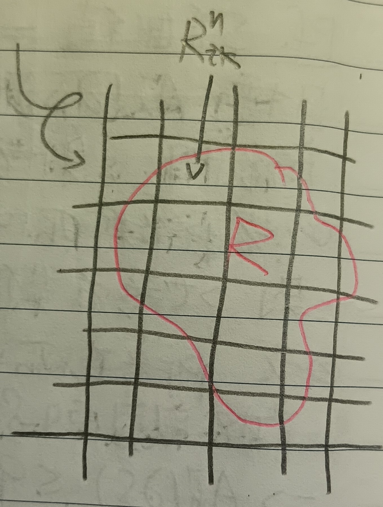

這份筆記是關於多重積分的定義與性質。
二重積分
定義 1：多重積分 (Multiple Integral)
給定有界函數\(f(x,y)\)及一約旦可測集\(R\)，我們和這裡的例9中一樣用許多小方塊\(R_{ik}^n\)來覆蓋\(R\)(見下圖1)。
令 \[ \begin{aligned} M_{ik}^n=\sup f(x,y)&,\mbox{ where }(x,y)\in R_{ik}^n\\ m_{ik}^n=\inf f(x,y)&,\mbox{ where }(x,y)\in R_{ik}^n \end{aligned} \] 並記 \[ F_n^+=\sum_{i,k}M_{ik}^n2^{-2n}, F_n^-=\sum_{i,k}m_{ik}^n2^{-2n} \] 顯然有\(F_n^-\leq F_n^+\)，且\(F_n^-\leq F_{n+1}^-\leq F_{n+1}^+\leq F_n^+\)。則若\(\lim F_n^-=\lim F_n^+\)，可以定義\(f\)在\(R\)上的積分，即 \[ \iint_R f(x,y)dxdy=\lim F_n^-=\lim F_n^+ \]
引理 2
若\(f\)在\(\mathbb{R}^2\)上處處連續，且除了一有界可測集\(R\)以外函數值處處為零。則 \[
\iint_{\mathbb{R}^2}f(x,y)dxdy
\] 存在。
證明：由於\(f\)一致連續，且\(F_n^-\leq F_n^+\)，故有\(0\leq F_n^+-F_n^-\leq\epsilon A(R)\)。令\(\epsilon\to 0\)，則 \[ \lim(F_n^+-F_n^-)=0 \] 且顯然\(\lim F_n^+\)和\(\lim F_n^-\)都存在，故\(\lim F_n^+=\lim F_n^-\)。QED
定義 3：特徵函數 (Characteristic Function)
給定有界集\(S\)，令其特徵函數為 \[ \phi_S(x,y)=\left\{ \begin{aligned} 1&, (x,y)\in S\\ 0&,\mbox{ otherwise} \end{aligned} \right. \]
註記 3-1
可以發現\(\iint\phi_S(x,y)dxdy\)存在若且唯若\(S\)有面積。
證明：我們有 \[ F_n^+=\sum_{R_{ik}^n\cap S\neq\varnothing}1\cdot R_{ik}^n=A_n^+(S), F_n^-=\sum_{R_{ik}^n\subset S}m_{ik}^nR_{ik}^n=\sum_{R_{ik}^n\subset S} R_{ik}^n=A_n^-(S) \] 故積分存在若且唯若\(S\)有面積，且 \[ \iint_R\phi_S(x,y)dxdy=A(S) \] QED
註記 4
我們有以下三個顯然的性質：
1. \(\iint_R
f+g=\iint_R f-\iint_R g\)
2. \(\iint_R(-f)=-\iint_R f\)
3. \(\iint_R cf=c\iint_R f\)
註記 5
若\(f\)和\(g\)都有界且可積，則\(fg\)也可積。
證明：給定兩點\((\xi,\eta)\), \((\xi',\eta')\)，則 \[ \begin{aligned} f(\xi,\eta)g(\xi,\eta)-f(\xi',\eta')g(\xi',\eta')&=f(\xi,\eta)[g(\xi,\eta)-g(\xi',\eta')]\\ &+g(\xi',\eta')[f(\xi,\eta)-f(\xi',\eta')]\\ &\leq M|M_g-m_g|+M'|M_f-m_f| \end{aligned} \] 其中\(M_g,m_g\)是\(g\)的最大、小值，\(M_f,m_f\)是\(f\)的最大、小值。於是，我們知道\(fg\)是有界的，故\(fg\)可積。QED
推論 6
若\(\iint_R f\)存在且\(S\subseteq R\)，則\(\iint_S f\)存在。
證明： \[ \iint_S f=\iint_R f\phi_S \] QED
多重積分
定理 7
給定可積函數\(f(x,y,z)\)。假設對於任何固定的\((x,y)\)，\(f(x,y,z)\)都在\(z\)方向尚可微，則令 \[ h(x,y)=\int f(x,y,z)dz \] 則\(h(x,y)\)可積且 \[ \iint h(x,y)dxdy=\iiint f(x,y,z)dxdydz \]
證明：由於\(f\)可積，考慮\(xyz\)空間的分割 \[ C^n_{i,j,k}=\left\{\frac{i}{2^n}\leq x\leq\frac{i+1}{2^n}, \frac{j}{2^n}\leq y\leq\frac{j+1}{2^n}, \frac{k}{2^n}\leq z\leq\frac{k+1}{2^n}\right\} \] 則 \[ F_n^+=\sum_{i,j,k}M^n_{i,j,k}2^{-3n}, F_n^-=\sum_{i,j,k}m^n_{i,j,k}2^{-3n} \] 其中\(M^n_{i,j,k}, m^n_{i,j,k}\)分別是\(f\)在\(C^n_{i,j,k}\)上的極大值。對於給定的\((x,y)\)，令 \[ R_{ij}^n=\left\{\frac{i}{2^n}\leq x\leq\frac{i+1}{2^n}, \frac{j}{2^n}\leq y\leq\frac{j+1}{2^n}\right\} \] 在\(R_{ij}^n\)上，對\(z\)積分，有 \[ h(x,y)=\int f(x,y,z)dz\leq\sum_k M^n_{i,j,k}2^{-n} \] 令\(H_n^+\)為\(h(x,y)\)積分的上和，則 \[ H_n^+\leq\sum_{i,j}\left(\sum_k M_{i,j,k}^n 2^{-n}\right)2^{-2n} \] 故\(H_n^+\leq F_n^+\)，同理\(F_n^-\leq H_n^-\)。故 \[ F_n^-\leq H_n^-\leq H_n^+\leq F_n^+ \] 但 \[ \lim_{n\to\infty}F_n^+=\lim_{n\to\infty}F_n^- \] 故\(h(x,y)\)可積，且\(\iint h=\iiint f\)。QED
定理 7-1
由定理7有 \[ \iiint f(x,y,z)dxdydz=\int\left(\int\left(\int fdz\right)dy\right)dx \]
例 7-2
給定\(a,b>0\)，有 \[ \int_0^\infty\frac{e^{-ax}-e^{-bx}}{x}dx=\log\frac{b}{a} \]
證明：令 \[ I=\int_0^\infty\frac{e^{-ax}-e^{-bx}}{x}dx \] 則 \[ \begin{aligned} I&=\lim_{T\to\infty}\int_0^T\left(\int_a^b e^{-xy}\right)dx\\ &=\lim_{T\to\infty}\int_a^b\frac{1-e^{-Ty}}{y}dy\\ &\mbox{(這是定理7)}\\ &=\log\frac{b}{a}-\lim_{T\to\infty}\int\frac{e^{-Ty}}{y}dy \end{aligned} \] 而 \[ \begin{aligned} \lim_{T\to\infty}\int_a^b\frac{e^{-Ty}}{y}dy\\ &=\lim_{T\to\infty}\int_{Ta}^{Tb}\frac{e^{-y}}{y}dy\\ &\leq\lim_{T\to\infty}\frac{1}{Ta}\int_{Ta}^{Tb}e^{-y}dy=0 \end{aligned} \] 故 \[ I=\log\frac{b}{a} \] QED